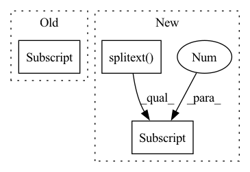

Pattern ID :7388
Before Change
item_id = line[0]
if item_id.endswith(LfwPath.IMAGE_EXT):
item_id = item_id[:-len(LfwPath.IMAGE_EXT)]
if item_id not in items:
items[item_id] = DatasetItem(id=item_id, subset=self._subset,
image=osp.join(images_dir, line[0]),
attributes={"positive_pairs": [], "negative_pairs": []})After Change
for line in f:
line = line.split("\t")
item_id = osp.splitext(line[0])[0]
if item_id not in items:
items[item_id] = DatasetItem(id=item_id, subset=self._subset,
image=osp.join(images_dir, line[0]),
attributes={"positive_pairs": [], "negative_pairs": []})In pattern: SUPERPATTERN
Frequency: 4
Non-data size: 3
Instances Fragment ID: 24580275
Project Name: openvinotoolkit/datumaro
Commit Name: 053e9cdc72e099a2b006bc8dbe3e4a699c922c4a
Time: 2021-03-18
Author: maxim.zhiltsov@intel.com
File Name: datumaro/plugins/lfw_format.py
M Class Name: LfwExtractor
N Class Name: LfwExtractor
M Method Name: _load_items(2)
N Method Name: _load_items(2)
M Parent Class: SourceExtractor
N Parent Class: SourceExtractor
M File Name: datumaro/plugins/lfw_format.py
N File Name: datumaro/plugins/lfw_format.py
M Start Line: 30
M End Line: 84
N Start Line: 35
N End Line: 93
Before Change
image_resized /= 255.0
// Capture the corresponding XML file for getting the annotations.
annot_filename = image_name[:-4] + ".xml"
annot_file_path = os.path.join(self.labels_path, annot_filename)
boxes = []After Change
image_resized /= 255.0
// Capture the corresponding XML file for getting the annotations.
annot_filename = os.path.splitext(image_name)[0] + ".xml"
annot_file_path = os.path.join(self.labels_path, annot_filename)
boxes = [] Fragment ID: 24580274
Project Name: sovit-123/fastercnn-pytorch-training-pipeline
Commit Name: 198c08e70da79505bbe03db7569834b12c3e0333
Time: 2022-12-01
Author: tomas.olsson@ri.se
File Name: datasets.py
M Class Name: CustomDataset
N Class Name: CustomDataset
M Method Name: load_image_and_labels(2)
N Method Name: load_image_and_labels(2)
M Parent Class: Dataset
N Parent Class: Dataset
M File Name: datasets.py
N File Name: datasets.py
M Start Line: 84
M End Line: 143
N Start Line: 91
N End Line: 153
Before Change
item_id = item_id[len(item_id.split("/")[0]) + 1:]
bbox_count = lines[image_id + 1]
bbox_lines = lines[image_id + 2 : image_id + int(bbox_count) + 2]
for bbox in bbox_lines:
bbox_list = bbox.split()
if 4 <= len(bbox_list):
attributes = {}After Change
for line_idx in line_ids:
image_path = lines[line_idx].strip()
item_id = osp.splitext(image_path)[0]
image_path = osp.join(self._dataset_dir,
WiderFacePath.SUBSET_DIR + self._subset,
WiderFacePath.IMAGES_DIR, image_path) Fragment ID: 24580273
Project Name: openvinotoolkit/datumaro
Commit Name: 22728f23e850b31562cdb5da80cd34722a091574
Time: 2021-03-19
Author: maxim.zhiltsov@intel.com
File Name: datumaro/plugins/widerface_format.py
M Class Name: WiderFaceExtractor
N Class Name: WiderFaceExtractor
M Method Name: _load_items(2)
N Method Name: _load_items(2)
M Parent Class: SourceExtractor
N Parent Class: SourceExtractor
M File Name: datumaro/plugins/widerface_format.py
N File Name: datumaro/plugins/widerface_format.py
M Start Line: 68
M End Line: 115
N Start Line: 69
N End Line: 100
Before Change
record = scipy.io.loadmat(fname)
length = record["val"] .shape[-1]
for i, seg in enumerate(range(0, length, int(args.sec * sample_rate))):
data = {}After Change
continue
record = wfdb.rdrecord(
os.path.splitext(fname)[0]
).__dict__["p_signal"].astype(np.float32).T
length = record.shape[-1]
Fragment ID: 24580271
Project Name: jwoo5/fairseq-signals
Commit Name: 35602f2c8c782a331a5ea6280fc9d7e4ca34b4c0
Time: 2021-09-29
Author: ojw0123@korea.ac.kr
File Name: fairseq_signals/data/ecg/preprocess/preprocess_physionet2021.py
M Class Name: AnonimousClass
N Class Name: AnonimousClass
M Method Name: preprocess(5)
N Method Name: preprocess(4)
M Parent Class:
N Parent Class:
M File Name: fairseq_signals/data/ecg/preprocess/preprocess_physionet2021.py
N File Name: fairseq_signals/data/ecg/preprocess/preprocess_physionet2021.py
M Start Line: 88
M End Line: 120
N Start Line: 101
N End Line: 138